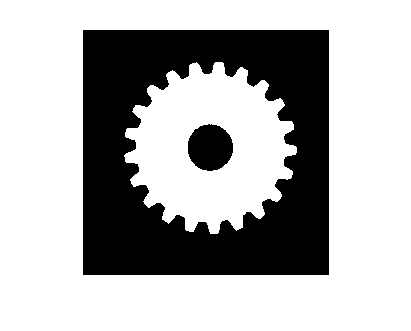
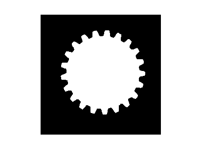
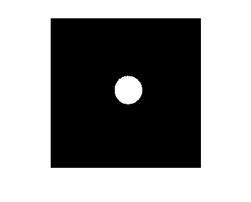
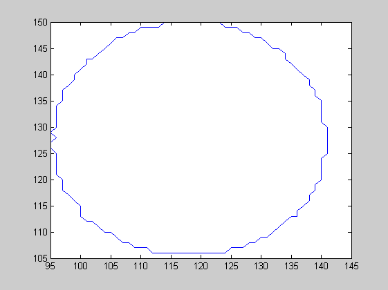
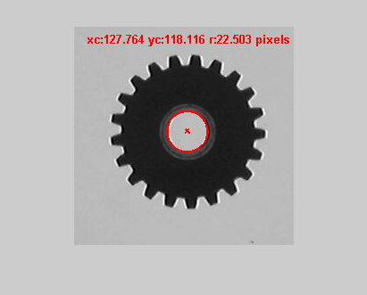
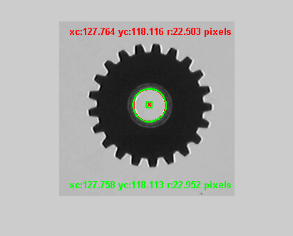

Contar el número de dientes de un engranaje
Contents
- Cargamos la imagen y la convertimos a escala de gris
- Seleccionamos un umbral y binarizamos la imagen
- Rellenamos los agujeros de los objetos encontrados
- Calculamos la diferencia
- Trazamos el contorno
- Ajustamos los datos del contorno a una circunferencia
- A partir de las características de las regiones.
Cargamos la imagen y la convertimos a escala de gris
img=imread('176.jpg');
img=rgb2gray(img);
Seleccionamos un umbral y binarizamos la imagen
imhist(img)
% Se invierte el resultado para que el objeto quede blanco
img2=~im2bw(img,100/255);
imshow(img2);

Rellenamos los agujeros de los objetos encontrados
img3=imfill(img2,'holes');
imshow(img3);

Calculamos la diferencia
img4=imabsdiff(img3,img2); imshow(img4)

Trazamos el contorno
[B,L] = bwboundaries(img4,'noholes');
figure; plot(B{1}(:,1),B{1}(:,2));

Ajustamos los datos del contorno a una circunferencia
% La ecuación básica de la circunferencia es: % (x-xc)^2 + (y-yc)^2 = r^2, % donde (xc,yc) es el centro y r es el radio. % % Dicha ecuación puede reescribirse en términos de tres parámetros a, b y c: % x^2 + y^2 + a*x + b*y + c = 0, % donde a = -2*xc, b = -2*yc, y c = xc^2 + yc^2 - r^2 % % Matricialmente puede escribirse como: % [x y 1] * [a b c]' = -[x^2+y^2] % donde x e y son las coordenadas de cada uno de los puntos del contorno que % queremos aproximar por una circunferencia % % Resolvemos un sistema de ecuaciones para poder calcular el valor de a, b y c % A partir de ellos se calcularán las coordenadas del centro y el radio. x = B{1}(:,2); y = B{1}(:,1); % Resolvemos el sistema de ecuaciones abc = pinv([x y ones(length(x),1)])*(-(x.^2+y.^2)); a = abc(1); b = abc(2); c = abc(3); % calculamos las coordenadas del centro y el radio xc=-a/2; yc=-b/2; r=sqrt((xc^2+yc^2)-c) % Marcamos el centro imshow(img); hold on; plot(xc,yc,'rx','LineWidth',2); % Dibujamos la circunferencia theta = 0:0.01:2*pi; % use parametric representation of the circle to obtain coordinates % of points on the circle Xfit = r*cos(theta) + xc; Yfit = r*sin(theta) + yc; plot(Xfit, Yfit,'r','LineWidth',2); resultado = sprintf('xc:%2.3f yc:%2.3f r:%2.3f pixels', xc,yc,r); text(15,15,resultado,'Color','r','FontWeight','bold'); %hold off;
r = 22.5033

A partir de las características de las regiones.
% También es posible hacer el cálculo a partir de los valores calculados para % las características de los objetos [imgL,numobj]=bwlabel(img4,8); % Calculamos las propiedades de las regiones propiedades=regionprops(imgL, {'Centroid', 'EquivDiameter'}); xc=propiedades(1).Centroid(1); yc=propiedades(1).Centroid(2); r=propiedades(1).EquivDiameter/2; % Marcamos el centro %imshow(img); %hold on; plot(xc,yc,'gs','LineWidth',2); % use parametric representation of the circle to obtain coordinates % of points on the circle Xfit = r*cos(theta) + xc; Yfit = r*sin(theta) + yc; plot(Xfit, Yfit,'g','LineWidth',2); resultado = sprintf('xc:%2.3f yc:%2.3f r:%2.3f pixels', xc,yc,r); text(15, size(img,1)-15,resultado,'Color','g','FontWeight','bold'); %hold off;
